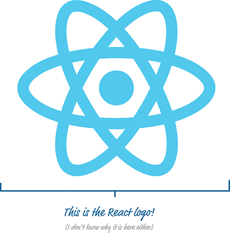

Figure 1.1 An app.
Figure 1.2 Multipage design.
Figure 1.3 The individual page model is a bit dated, like this steam engine.

Figure 1.4 Single-page app.
Figure 1.5 Adding children.

Figure 1.6 The final or end state of your UI is what matters in React.
Figure 1.7 Imagine an in-memory virtual DOM that sort of looks like this.

Figure 1.8 An example of how the visuals of your app can be broken into smaller pieces.